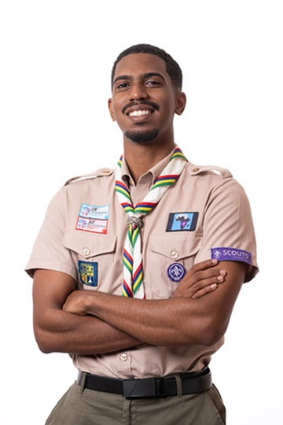

Africa Region Youth Consultation
Contributed the Mauritius youth perspective to regional priorities on participation and climate action.
WOSM Youth Representative · 16th Port Louis Scout Group
A young leader from Mauritius creating impact locally, nationally, regionally and globally — through youth participation, service and innovation.

Impact at a glance
Featured highlights
Four areas where my leadership has created the clearest, most measurable impact.
Representing the voice of young people across the continent in consultations, governance and youth-participation initiatives.
See international work →Two years leading the DYSC as President — building structures that put youth at the centre of decision-making.
See leadership →Designing and running forums that give hundreds of young people a real platform to shape their communities.
See the projects →Latest activities
Contributed the Mauritius youth perspective to regional priorities on participation and climate action.
Convened young leaders to set a shared agenda for the mandate ahead
Mobilising youth around plastic-waste reduction and environmental stewardship.